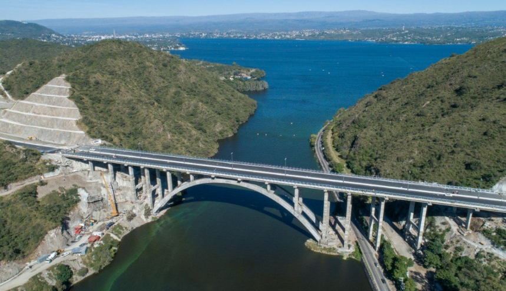

Atracciones

Reloj Cucú
Visita el icónico Reloj Cucú y disfruta de la espectacular vista panorámica de Villa Carlos Paz. No te pierdas el sonido característico del cucú cada hora.
Más información

Volver arriba
Dique San Roque
Explora el imponente Dique San Roque, un embalse de aguas cristalinas que ofrece la oportunidad de practicar deportes acuáticos como navegación, pesca y esquí acuático.
Más información